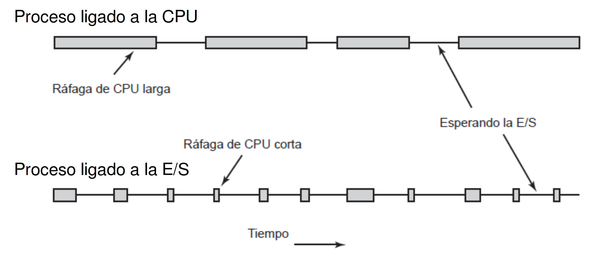
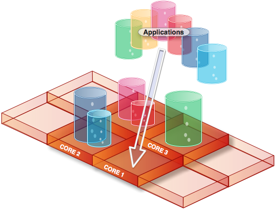
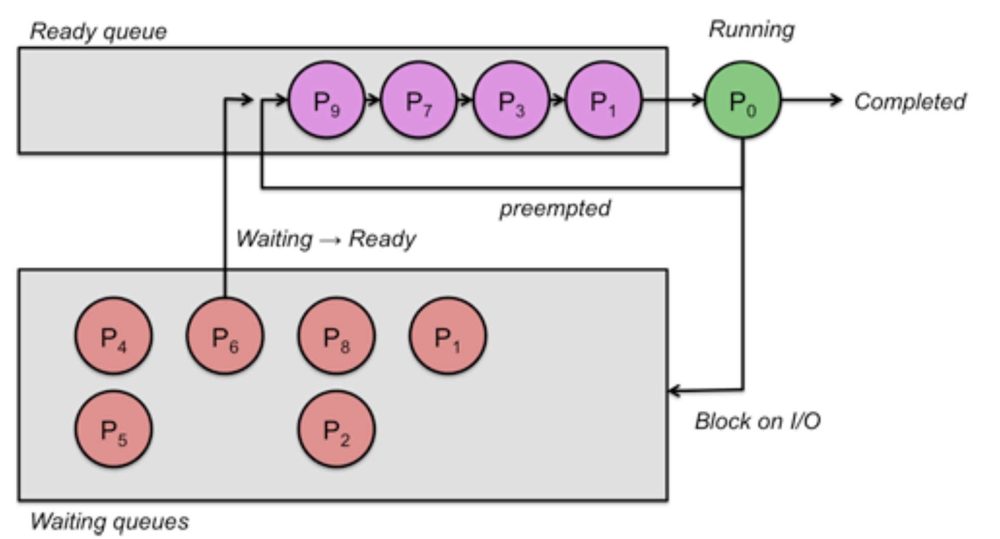
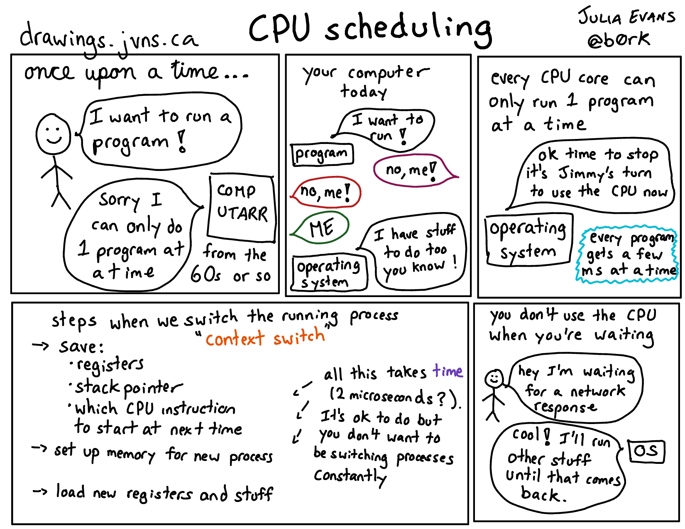

Universidad Nacional Experimental Del Táchira
Decanato De Docencia
Dpto. Ingeniería en Informática
Gestión de procesos
Código 0435607T
Contenido
- Introducción
- Gestión de procesos:
- Por lotes
- Interactivos
- Tiempo real
- Multiprocesador
- Planificador y despachador de procesos.
Introducción
- Planificador de procesos: es la sección del sistema operativo encargado de ordenar la secuencia en que los procesos del serán ejecutados, con el fin de optimizar el uso de los recursos del sistema.
- Algoritmo de planificación: es el método como el planificador organiza los procesos para ser ejecutados.
Introducción
- En sistemas de un solo proceso el planificador sólo tenía que ejecutar la siguiente instrucción.
- En los sistemas multiproceso es necesario aprovechar el hardware al máximo.
- La ejecución de un proceso consiste en una alternancia entre ráfagas de CPU y ráfagas de E/S. Optimizar esto, es responsabilidad del planificador.
Introducción
- ¿Los procesos interactivos de usuario deberían tener prioridad sobre los procesos de segundo plano del sistema? Depende de la situación.
- El planificador debe hacer uso eficiente de la CPU. La conmutación de procesos también tiene un costo computacional.
Introducción


Introducción
Cuando planificar procesos:
- En la creación de procesos.
- Cuando un proceso termina.
- Durante el bloqueo de E/S de un proceso.
- Cuando ocurre una interrupción de E/S.
Categoría de planificadores
- No apropiativo: Selecciona un proceso para ejecutarlo. Permite su ejecución hasta que el mismo se bloquee (esperando E/S) o hasta que termine.
- Apropiativo: Selecciona un proceso para ejecutarlo. Permite su ejecución por un espacio de tiempo fijo y luego lo saca del CPU para asignarlo a otro proceso.
Criterios de un planificador
-
Maximizar:
- Uso del CPU.
- Rendimiento.
-
Minimizar:
- Tiempos de ejecución.
- Tiempo de respuesta.
- Tiempo de espera.
Desapachador
- Es el módulo que proporciona control al CPU de los procesos seleccionados por el planificador a corto plazo.
-
Esto impica:
- Realiza un cambio de contexto.
- Cambio al modo de usuario (sin privilegios).
- Salto a la posición n correcta del programa para continuar su ejecución.
- El despachador debe ser muy rápido, pues se invoca cada que vez que se conmuta un proceso.
- El tiempo perdido por este proceso se llama latencia de despacho.
Despachador

El Despachador, también conocido como Scheduler asigna cuales aplicaciones deben ser ejecutadas en el procesador
Tipos de planificadores
Procesamiento por lotes
- Primero en entrar, primero en ser atendido (FCFS)
- Trabajo más corto primero (SJF)
- Menor tiempo restante a continuación (SRTN)
Tipos de planificadores
Sistemas interactivos:
- Turno circular (Round Robin).
- Planificación por prioridad
- Colas multinivel.
- Colas multinivel con retroalimentación.
- Planificación garantizada
Planificación en tiempo real.
Planificación en sistemas multiprocesador.
Procesamiento por lotes
FIFO - FCFS
- Es el más simple de los algoritmos de planificación, simplemente ejecuta los procesos a medida que solicitan acceso al CPU. (mediante una FIFO).
- Cuando se coloca un proceso en la cola de preparados su PCB se coloca al final de la cola, cuando el CPU está libre el planificador coloca el proceso ubicado al principio de la cola, pasa a ejecutarse y es eliminado de la cola.
Uno de los problemas de este algoritmo es el efecto Convoy, el cual ocurre cuando un proceso espera mucho tiempo, debido a un proceso utilizando el CPU por mucho tiempo.
FIFO - FCFS: datos de llegada
La CPU atiende en orden de llegada y cada proceso ejecuta hasta terminar.
| Proceso | Llegada | Tiempo CPU (ms) |
|---|---|---|
| P1 | 0 | 6 |
| P2 | 4 | 3 |
| P3 | 6 | 4 |
| P4 | 7 | 1 |
Presiona ↓ para ver cómo cada proceso entra al CPU.
Tiempo 0: P1 entra al CPU
P1 ejecuta de 0 a 6.
| 0 | 1 | 2 | 3 | 4 | 5 |
Tiempo 6: P2 entra al CPU
P1 termina y P2, que llegó antes que P3 y P4, ejecuta de 6 a 9.
| 0 | 1 | 2 | 3 | 4 | 5 | 6 | 7 | 8 |
Tiempo 9: P3 entra al CPU
P2 termina y P3 ejecuta de 9 a 13.
| 0 | 1 | 2 | 3 | 4 | 5 | 6 | 7 | 8 | 9 | 10 | 11 | 12 |
Tiempo 13: P4 entra al CPU
P3 termina y P4 ejecuta de 13 a 14. La planificación FCFS ha completado todos los procesos.
| 0 | 1 | 2 | 3 | 4 | 5 | 6 | 7 | 8 | 9 | 10 | 11 | 12 | 13 |
| Proceso | Inicio − llegada | Espera (ms) |
|---|---|---|
| P1 | 0 − 0 | 0 |
| P2 | 6 − 4 | 2 |
| P3 | 9 − 6 | 3 |
| P4 | 13 − 7 | 6 |
| Espera promedio: 2.75 ms | ||
Procesamiento por lotes
Primer Proceso más corto (SJF)
Asigna a la CPU el siguiente proceso con menor tiempo trabajo, en caso de existir varios procesos con el mismo valor aplica FCFS. Sin embargo, es costoso realizar el calculo del tiempo restante para cada proceso y a veces es díficil de predecir/conocer el valor real.
Solo funciona si TODOS los procesos llegan al mismo tiempo
Procesamiento por lotes
Menor tiempo restante (SPN)
Es una versión apropiativa de SJF. Selecciona el trabajo con el menor tiempo de procesamiento restante. Es necesario conocer el tiempo de ejecución.
SJF/SPN
| Procesos | Llegada | Tiempo CPU (ms) |
|---|---|---|
| P1 | 0 | 7 |
| P2 | 2 | 4 |
| P3 | 4 | 1 |
| P4 | 5 | 4 |
Presiona ↓ para ver cómo se asigna la CPU.
Tiempo 0: P1 entra al CPU
P1 es el único proceso disponible y ejecuta de 0 a 7 sin interrupciones.
| 0 | 1 | 2 | 3 | 4 | 5 | 6 |
Tiempo 7: P3 entra al CPU
P1 termina. Entre los procesos listos, P3 tiene el menor tiempo de CPU y ejecuta de 7 a 8.
| 0 | 1 | 2 | 3 | 4 | 5 | 6 | 7 |
Tiempo 8: P2 entra al CPU
P3 termina. P2 y P4 tienen 4 ms de CPU; P2 llegó primero y ejecuta de 8 a 12.
| 0 | 1 | 2 | 3 | 4 | 5 | 6 | 7 | 8 | 9 | 10 | 11 |
Tiempo 12: P4 entra al CPU
P2 termina y P4 ejecuta de 12 a 16. Todos los procesos han terminado.
| 0 | 1 | 2 | 3 | 4 | 5 | 6 | 7 | 8 | 9 | 10 |
| 11 | 12 | 13 | 14 | 15 |
| Proceso | Operación | Total |
|---|---|---|
| P1 | 7 - 7 - 0 | 0 |
| P2 | 12 - 4 - 2 | 6 |
| P3 | 8 - 1 - 4 | 3 |
| P4 | 16 - 4 - 5 | 7 |
| Tiempo de espera promedio: 4 | ||
Sistemas interactivos
Round Robin (Algoritmo por turnos)
Asigna un espacio de tiempo a cada proceso (cuanto o quantum) para ejecutarse, si el proceso: termina, acaba el cuanto, se bloquea por acceso a E/S. El S.O. hace un cambio de contexto y lo coloca (si aún debe seguir ejecutándose) al final de la cola.
- El cuanto o quantum suele estar entre los 10ms y 100ms.
-
Como el cambio de contexto es costosa, se debe evitar:
- Cuanto muy bajo: sobrecarga del sistema.
- Cuanto muy alto: se comporta como un FCFS/FIFO
Round Robin (Algoritmo por turnos)
Con un quantum de 3:
| Procesos | Llegada | Tiempo CPU (ms) |
|---|---|---|
| P1 | 0 | 7 |
| P2 | 2 | 4 |
| P3 | 4 | 1 |
| P4 | 5 | 4 |
Presiona ↓ para ver cada turno de CPU.
Tiempo 0: P1 usa su primer turno
P1 ejecuta durante 3 ms; le quedan 4 ms.
| 0 | 1 | 2 |
Tiempo 3: P2 usa su primer turno
P2 ejecuta de 3 a 6; le queda 1 ms.
| 0 | 1 | 2 | 3 | 4 | 5 |
Tiempo 6: P1 vuelve al CPU
P1 ejecuta otros 3 ms; le queda 1 ms.
| 0 | 1 | 2 | 3 | 4 | 5 | 6 | 7 | 8 |
Tiempo 9: P3 usa su turno
P3 necesita solo 1 ms y termina en el tiempo 10.
| 0 | 1 | 2 | 3 | 4 | 5 | 6 | 7 | 8 | 9 |
Tiempo 10: P4 usa su primer turno
P4 ejecuta durante 3 ms; le queda 1 ms.
| 0 | 1 | 2 | 3 | 4 | 5 | 6 | 7 | 8 | 9 | 10 | 11 | 12 |
Tiempo 13: P1 termina
P1 ejecuta su 1 ms restante y completa su trabajo.
| 0 | 1 | 2 | 3 | 4 | 5 | 6 | 7 | 8 | 9 | 10 | 11 | 12 | 13 |
Tiempo 14: P2 termina
P2 ejecuta su 1 ms restante y termina en 15; P4 usa su último milisegundo y termina en 16.
| 0 | 1 | 2 | 3 | 4 | 5 | 6 | 7 | 8 | 9 | 10 |
| 11 | 12 | 13 | 14 | 15 |
| Proceso | Fin − CPU − llegada | Espera (ms) |
|---|---|---|
| P1 | 14 − 7 − 0 | 7 |
| P2 | 15 − 4 − 2 | 9 |
| P3 | 10 − 1 − 4 | 5 |
| P4 | 16 − 4 − 5 | 7 |
| Tiempo de espera promedio: 7 | ||
Round Robin (Algoritmo por turnos)

Sistemas interactivos
Por prioridades
Cada proceso tiene asociado una prioridad, entonces al momento de quedar la CPU libre, se le asigna el proceso con la prioridad más alta. Sin embargo, hay que tener cuidado, pues los procesos con baja prioridad pueden no ser ejecutados debido a la llegada de procesos con prioridad superior, esto se resuelve aplicando la técnica de envejecimiento.
Generalmente los números de menor valor son los de mayor prioridad, pero no existe un estándar para declarar esto como una afirmación para todos los S.O.
Por prioridades
| Pro. | Lleg. | Tiempo CPU (ms) | Prioridad |
|---|---|---|---|
| P1 | 0 | 7 | 3 |
| P2 | 2 | 4 | 1 |
| P3 | 4 | 1 | 3 |
| P4 | 5 | 4 | 2 |
Presiona ↓ para ver cómo la prioridad decide quién entra al CPU.
Tiempo 0: P1 entra al CPU
P1 es el único proceso disponible y ejecuta hasta que llega P2.
| 0 | 1 |
Tiempo 2: P2 toma el CPU
P2 tiene prioridad 1, superior a la de P1, y ejecuta hasta terminar en 6.
| 0 | 1 | 2 | 3 | 4 | 5 |
Tiempo 6: P4 toma el CPU
Entre P1, P3 y P4, P4 tiene la prioridad más alta (2) y ejecuta hasta 10.
| 0 | 1 | 2 | 3 | 4 | 5 | 6 | 7 | 8 | 9 |
Tiempo 10: P1 vuelve al CPU
P1 tiene prioridad 3, mayor que la de P3, y completa su ejecución en 15.
| 0 | 1 | 2 | 3 | 4 | 5 | 6 | 7 | 8 | 9 | 10 | 11 | 12 | 13 | 14 |
Tiempo 15: P3 entra al CPU
P3 es el último proceso listo y finaliza en 16.
| 0 | 1 | 2 | 3 | 4 | 5 | 6 | 7 | 8 | 9 | 10 |
| 11 | 12 | 13 | 14 | 15 |
| Pro. | Operación | Total |
|---|---|---|
| P1 | 15 - 7 - 0 | 8 |
| P2 | 6 - 4 - 2 | 0 |
| P3 | 16 - 4 - 1 | 11 |
| P4 | 10 - 4 - 5 | 1 |
| Tiempo de espera promedio: 5 | ||
Sistemas interactivos
Colas multinivel
- Cada proceso es clasificado en grupos, por ejemplo: de primer o segundo plano, de usuario o del sistema, de usuarios locales o remotos, tamaño de memoria, prioridad, entre otros.
- La cola de procesos preparados se divide en varias colas distintas, una para agrupación realizada.
- Cada una de las colas posee su propio algoritmo de planificación para cada proceso dentro de ella.
- A nivel de colas, se planifican de acuerdo a una prioridad (pero puede existir inanición) o se asigna cierta porción de tiempo a cada uno.
Ejemplo de cola multinivel
Colas multinivel con retroalimentación
- Un proceso puede moverse de una cola a otra.
-
Definido por los siguientes parámetros:
- Número de colas.
- Algoritmos de planificación para cada cola.
- Método para determinar cuando mover un proceso a una cola de mayor prioridad.
- Método usado para ver cuando mover un proceso a una cola de menor prioridad.
- Método usado para determinar en qué cola ingresará un proceso cuando necesite servicio.
Ejemplo de cola multinivel con retroalimentación
Sistemas interactivos
Planificación garantizada
- Garantiza una porción igual de CPU a los usuarios del sistema.
- Si hay n usuarios, le corresponderá porción de 1/n de CPU a cada uno de ellos.
- Otra forma es agrupar los usuarios y asignarles a cada uno de esos grupos una porción de CPU en función de cierta prioridad.
Sistemas interactivos
Planificación garantizada
- Ventajas: equitativa para cada usuario pero penaliza los usuarios que ejecutan muchos procesos. El tiempo compartido del CPU es asignado por el administrador.
- Desventajas: Es equitativo para el usuario pero no para el CPU o los procesos. Un usuario puede tener mucho CPU asignado y no lo usará nunca. Un usuario puede necesitar más CPU del asignado y tampoco lo podrá conseguir.
Sistemas interactivos
Tiempo real
- Son sistemas que deben reaccionar en instantes de tiempo muy corto.
-
Se dividen en:
- Tiempo real duro: la respuesta debe ser en un tiempo estricto que se debe cumplir.
- Tiempo real suave: se tolera un poco de retraso en el tiempo de respuesta.
- Se dividen los programas en varios procesos con comportamiento predecible.
Sistemas interactivos
Tiempo real
- Se dice que un sistema de tiempo real es planificable si hay m eventos periódicos y el evento i ocurre con el periodo Pi y requiere Ci segundos de tiempo de la CPU para manejar cada evento , tal que:
Planificación en sistemas multiprocesador
- La idea es compartir la carga de todos los procesadores, para que todos trabajen a un ritmo similar.
- Multiprocesamiento asimétrico: un núcleo se suele encargar de realizar la planificación, procesamiento de las E/S y actividades del sistema operativo.
- Multiprocesamiento simétrico (SMP): cada procesador se autoplanifica: existe una cola de procesos preparados en común o cada uno tiene su propia cola, existe seguridad para no tomar el mismo proceso al mismo tiempo.
Planificación en sistemas multiprocesador
- Existe un proceso que se encarga de chequear cada cierto tiempo la carga de cada procesador y balancea la carga del mismo.
- Hoy en día la mayoría de los dispositivos son multiprocesador, por ello vienen con sistemas operativos con este tipo de planificación.


Planificador


Fuente: Julia Evans
Implementaciones
Windows
Windows planifica hilos por prioridad y ejecuta primero uno listo del nivel más alto. Los de igual prioridad comparten el CPU por turnos; uno de mayor prioridad puede interrumpir al que corre. Los ajustes dinámicos ayudan a mantener la respuesta del sistema.
La afinidad restringe los procesadores elegibles para un hilo; el planificador también considera prioridad y disponibilidad.
Fuentes: documentación de planificación, prioridades y multiprocesadores de Microsoft.
macOS
macOS (kernel XNU) planifica hilos con políticas y prioridades. Las clases Quality of Service (QoS) —user-interactive, user-initiated, utility y background— indican la importancia del trabajo y guían el uso de recursos; no son cuatro colas fijas.
Existen políticas de tiempo real para tareas específicas; macOS no es un sistema de tiempo real. Fuentes: Apple sobre QoS y políticas de planificación Mach.
Linux
Planificador justo de Linux: CFS y EEVDF
CFS significa Completely Fair Scheduler y se incorporó en Linux 2.6.23. Reparte el CPU entre tareas ejecutables según su peso (relacionado con nice), usando el tiempo de ejecución virtual (vruntime) para compensar cuánto CPU recibió cada tarea.
En kernels modernos, el planificador justo está migrando de CFS a EEVDF (Earliest Eligible Virtual Deadline First; transición iniciada en Linux 6.6). EEVDF considera cuánto CPU se le debe a cada tarea y elige la tarea elegible con la fecha virtual más próxima.